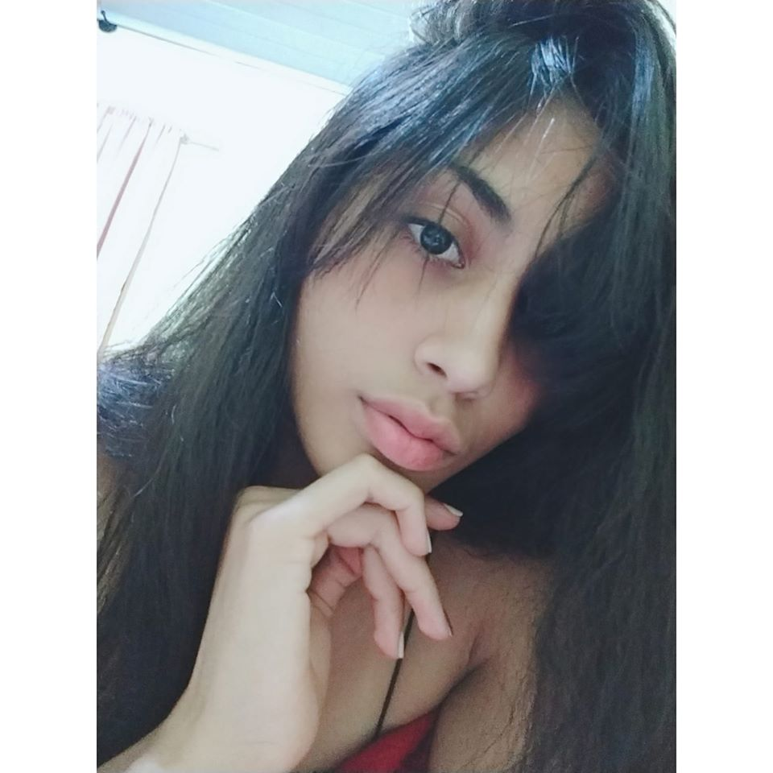

Essa é a maravilhosa Deusa Gabrielly
A Gabrelly "Gabby" conheci ela na minha adolecencia em 2015 Ela sempre foi uma pessoa maravilhosa comigo sempre teve paciencia com minhas bobagens e tudo mais, ela é uma pessoa extremamente inteligente linda tem uma habilidade sensacional para desenhar ela é muito muito simpatica com tudo isso eu me encanto muito, ela é um amor de pessoa. Desde que eu a conheci a conheci fiquei completamente apaixonado por ela, lembro de quando passavamos tempos e tempos no telefone conversando falando sobre os sonhos, que ela queria ser veterinaria pois ela ama os animais e que eu queria ser cozinheiro, infelizmente não tive coragem de falar que eu a amava e a vida infelizmente nós afastou.